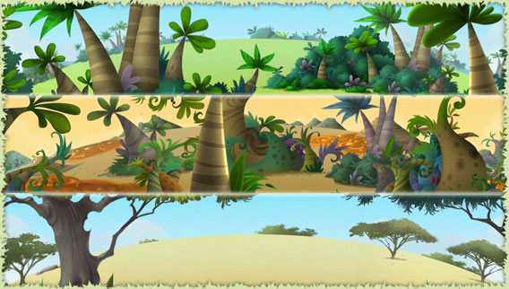
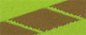
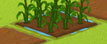
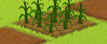

|
F.A.Q - ekoloko Moon Farms

What are the ekoloko Moon Farms?
Ekoloko Pioneers earn the right to participate in a special adventure and populate one of the ekoloko moons. On their moon they get to build their home and grow crops on their Moon Farm. The crops can be used to complete quests, as part of friendly trades and in the future can be exchanged in one of the ekoloko shops.
Back To Top.

Can I grow all the plants on every moon?
No. Some plants are generic and can be grown on every moon such as potatoes and corn. Other plants can be grown only on a specific moon type.
Back To Top.

How do I operate my Moon Farm?

Planting:
Click on one of your fields. If it is available for planting you will enter the seed shop. Note your gardening level! It has a direct impact on the seeds you are able to grow.
 Watering: Watering:
Your Plant will grow if it has enough water.. Move your mouse above a field that you planted. An info window will open with two major gages:
1. How much time is required for this plant to be ready to harvest
2. How long will the water last. You can water your plants by clicking the field.

Picking the Crops:
Sparkling stars will indicate to you that your plants have reached their final size. Click on them to pick the crops. The crops will go to a specific tab in your inventory, Please note! Your gardening level will impact the amount of crops you will get.

Withering:
Plants that aren’t watered will stop growing. . If they remain un watered for too long they will wither and die. Please note! Plants which have reached their full size will not wither. This will allow you to maintain beautiful farms.
Back To Top.

There are a few different Land colors on my Moon Farm. What does every color mean?

A field that is not yet ready to be planted.

A field that is ready to be planted. Click it to enter the seed store.
 A recently watered field. Move the mouse over it and you’ll see how much “WATER TIME” (that allows the plant to grow) you have left. A recently watered field. Move the mouse over it and you’ll see how much “WATER TIME” (that allows the plant to grow) you have left. 

A field that has not been watered for a while. Click it to see how much time your plant needs to fully develop and water it.

A dry field in desperate need of watering.
Back To Top.

What is “GARDNER LEVEL”  and GARDNER POINTS? and GARDNER POINTS?
The more Plants you grow the better gardeners you become. Plant more and move up the gardener level ladder. Once you reach higher gardening levels you’ll get more crops out of your fields, you’ll be able to grow a larger variety of plants and complete harder and more rewarding quests.
Back To Top.

How do I get more Pieces of land ready for planting?
The number of fields available for planting is related to the amount of water you have available to water your fields. To upgrade your water pump click on it and you will open a window that will tell you how much it costs to upgrade your pump and how much time it will take. Once you complete the upgrade you will be able to water a larger number of fields.
Back To Top.

What is the Solar Energy Station, and what are its implications?
Every moon on the ekolokian moon belt is equipped with a Solar Energy station that produces electricity. Stations that are at a higher level can provide more electricity and allows you to use more devices in your house.
Back To Top.
How do I upgrade my Solar Energy Station?
Click on the Station. A window will open and will show you the amount of kokos you need for the upgrade, and how long it will take.
Back To Top.

What happens if I don’t water my garden?
If you do not water your garden your plants will wither and die except if they are fully grown in which case they will stay alive.
Back To Top.

What happens to my Water Pump, My Solar Station and my gardener level when I move to a new moon?
If you decide to move to a new moon you will remain at the same garden level but your water pump and solar station will remain at your original moon and you will receive new basic ones which you will need to upgrade.
Back To Top.

|